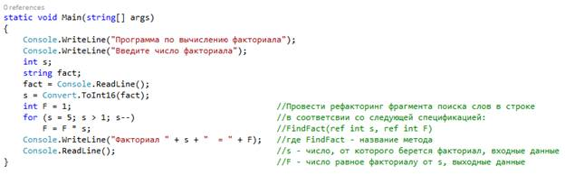
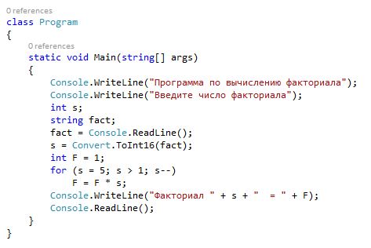
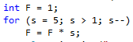
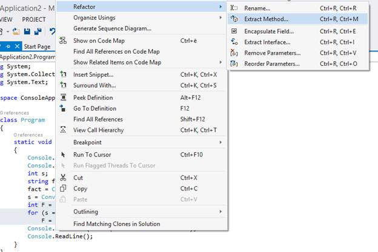
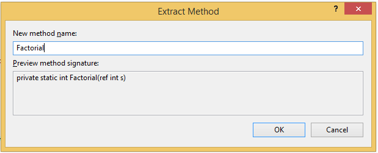
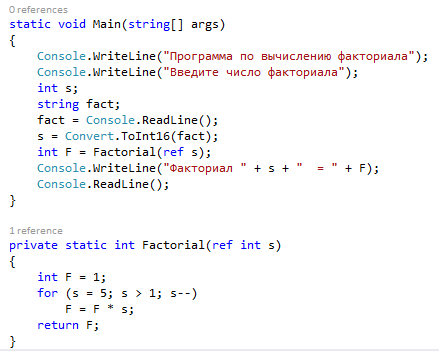

Рефакторинг
Цель: приобретение практических проведения рефакторинга существующего кода.
Рефакторинг — это процесс улучшения написанного ранее кода путем такого изменения его внутренней структуры, которое не влияет на внешнее поведение.
Для того чтобы провести рефакторинг необходимо определить методы, функции или классы, которые необходимо подвергнуть проведению рефакторинга. Основными критериями отбора методов для проведения рефакторинга являются:
- длина метода;
- сложность понимания;
- повторяющиеся участки кода;
После определения участка кода подлежащего рефакторингу необходимо выбрать методы рефакторинга. Средствами среду Visual Studio возможно вопроизвести следующие методы рефакторинга кода:
- извлечение метода;
- переименование метода;
- инкапсуляция поля;
- извлечение интерфейса;
- удаление параметров;
- упорядочивание параметров;
Работа со спецификацией метода
Спецификация метода — это строковое описание структуры его входных и выходных аргументов. Спецификация метода выполняет несколько важных функций:
- автоматизирует проверку аргументов на соответствие размерностей и размеров, освобождает разработчика метода от выполнения этих проверок;
- автоматизирует создание дерева алгоритма, обеспечивает защиту от случайной модификации поддеревьев методов после создания алгоритма, освобождает разработчика метода от выполнения необходимых для этого инициализаций;
- обеспечивает минимальную самодокументированность методов, предоставляя актуальную информацию о структуре их аргументов.
Имя метода — это произвольный идентификатор, не содержащий пробелов. Списки входных и выходных аргументов могут состоять из любого числа элементов, в том числе они могут быть пустыми.

В данном случае мы видим код и приведенную для него спецификацию метода, который необходимо выделить. Данная спецификация представляет собой набор входныи и выходных параметров, а также название метода.
Задание1.
Откройте тестовое приложение соответствующее
вашему варианту и изучите спецификацию метода. Тестовое приложение находится в папке "Programms".
Рефакторинг для извлечения метода
Извлечение метода — это операция рефакторинга, обеспечивающая простой способ создания нового метода из фрагмента кода существующего члена.
С помощью операции "Извлечение метода" можно создать новый метод путем извлечения выделенного кода, находящегося внутри блока кода существующего члена. Новый, извлеченный метод содержит выделенный код, а выделенный код в существующем члене меняется на вызов нового метода. Превращение фрагмента кода в отдельный метод позволяет быстро и точно реорганизовать код с целью его много кратного использования и лучшей читаемости.
Чтобы воспользоваться операцией извлечение метода необходимо открыть нужный участок кода, в качестве примера возьмем программу, которая выполняет вычисление факториала.

Выберите фрагмент кода представляющий метод, который нужно извлечь, в данном случае вынесем фрагмент, который вычисляет факториал:

В меню «Оптимизация» выберите пункт «Извлечение метода». В качестве альтернативы, диалоговое окно «Извлечение метода» можно открыть нажатием на клавиатуре сочетания клавиш CTRL+R, M. Или же выделить необходимый метод, нажать на правую кнопку мыши и в разделе «Рефакторинг» выбрать «Извлечение метода».

Откроется диалоговое окно "Извлечение метода."

Укажите имя нового метода, например Factorial, в поле "Имя нового метода."
Нажмите кнопку "ОК."
При использовании команды Извлечение метода новый метод вставляется после исходного члена в тот же класс.

Контрольное задание
Самостоятельно откройте тестовое приложение соответствующее вашему варианту и основе спецификации метода проведите рефакторинг кода по извлечению метода. Вариант задания выбирается по последним двум цифрам в студенческом билете. Полученный результат предоставьте преподавателю. Тестовое приложение находится в папке "Programms".